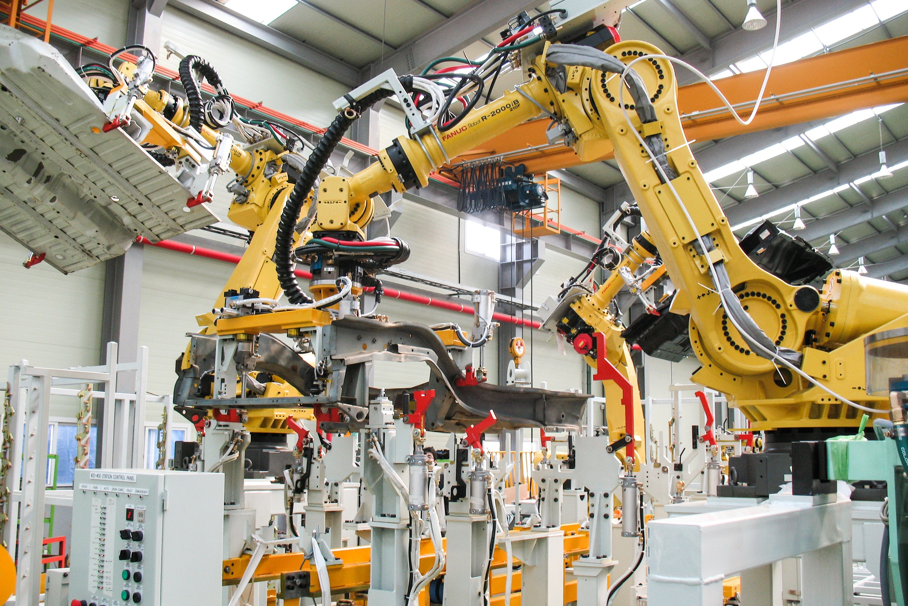

ADMINISTRAÇÃO
Prepara os estudantes para atuarem como gestores em empresas públicas ou privadas. Inclui disciplinas como contabilidade, finanças, marketing, gestão de pessoas e etc.

DESENVOLVIMENTO DE SISTEMAS
é uma graduação de nível tecnológico que torna o estudante apto a projetar, testar, implantar e gerenciar sistemas e recursos que envolvem Hardware e Software.

AUTOMAÇÃO INDUSTRIAL
Tem objetivo formar profissionais capazes de atuar no planejamento, implementação, otimização e manutenção de equipamentos e linhas de produção automatizadas.